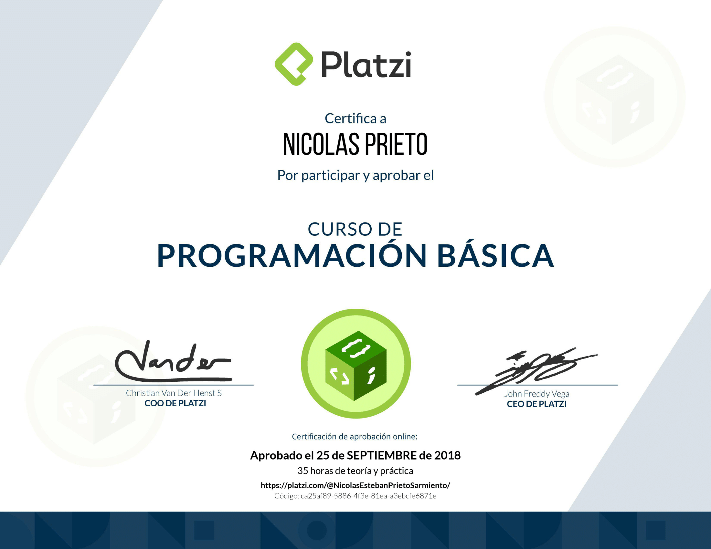

Desde muy pequeño me interesaba la tecnologia.
A los 12 años empece oficialmente a estudiar programacion en platzi.

2018 Apruebo el curso de programacion basica.

2018 Empiezo a estudiar desarrollo web y hago proyectos divertidos como:
2019 Entro a la escuela de JavaScript que hizo Platzi en bogotá.

2019 Me hago amigo de muchos programadores y desarrolladores.
2020 Hago parte del programa llamado Platzi master.
2020 Empiezo a estudiar IoT y robotica en platzi.
Apruebo la carrera de Iot y hago proyectos muy interesantes como un sumo robot
Empiezo a estudiar desarrollo de videojuegos y hago mi primer juego 3D:
2021 Vuelvo a estudiar desarrollo web y aprendo backend y bases de datos con node.js y mySQl.
Consigo mi primer trabajo como desarrollador freelance para desarrollar una pagina web de eventos.